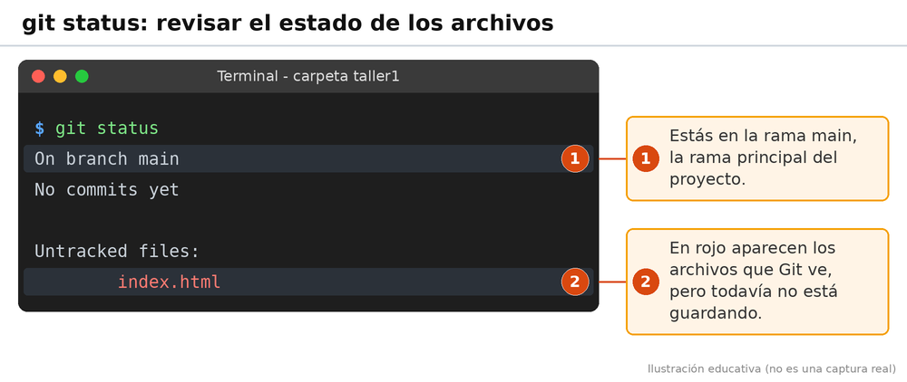
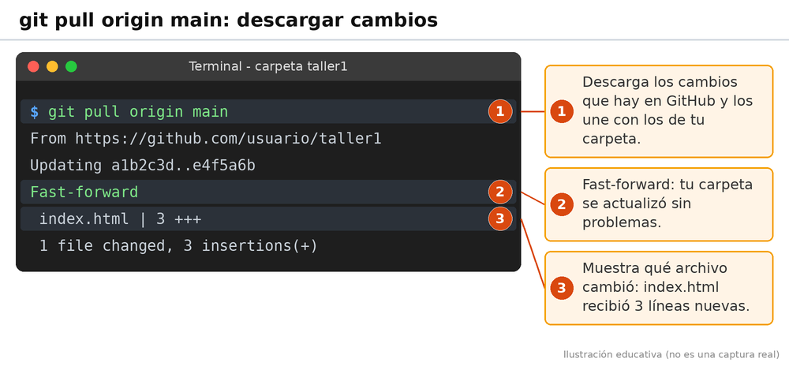
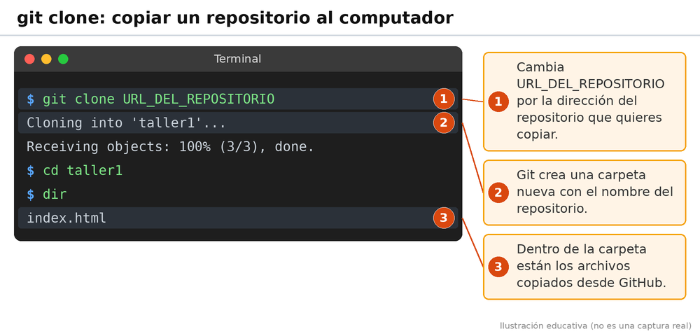
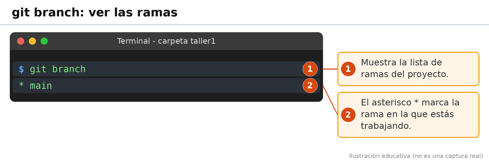

Git utiliza comandos que escribimos en la terminal para controlar los cambios de nuestros archivos. Estos comandos nos ayudan a organizar y guardar nuestros proyectos.
Sirve para iniciar un repositorio de Git dentro de una carpeta.

Permite revisar el estado de los archivos y saber si hay cambios pendientes.

Sirve para preparar los archivos que queremos incluir en el próximo registro de cambios.

Permite registrar los cambios que hemos preparado. El mensaje sirve para recordar qué modificamos.
git commit -m "Primer trabajo"

Sirve para enviar a GitHub los cambios guardados en nuestro repositorio local.
git push -u origin main

Permite descargar e integrar los cambios que existen en el repositorio remoto.
git pull origin main

Sirve para descargar una copia de un repositorio existente en GitHub.
git clone URL_DEL_REPOSITORIO

Permite consultar y administrar las ramas de un proyecto.
git branch
